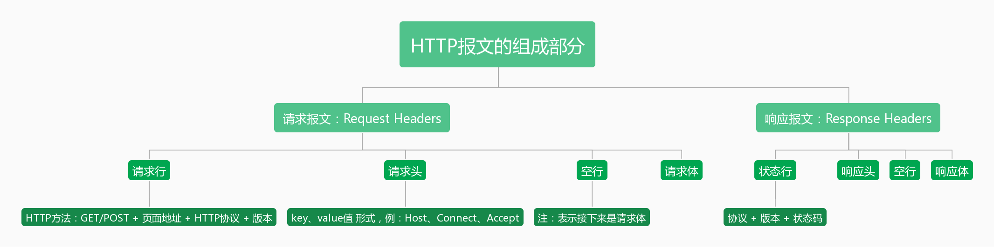

一、HTTP协议的主要特点
简单快速：每个资源是固定的，比如一个图片一个地址，如果我要在http里访问，只要输入这个资源就可以了
灵活：在每个http协议的头部分有个数据类型，通过一个http协议，就可以完成不同数据类型的一个传输
无连接：链接一次就会断掉，不会保持链接
无状态：客户端和服务端是两种身份，客户端向服务器请求一个图片，http协议帮助建立链接，帮助中间传输，这次任务完成，链接断开，下次客户端再过来，服务端是没法区分上一次链接的和这次链接的是不是同一个人，同一个身份。现在有一些网站能知道是不是同一个人，他是通过一些其他的手段做到的（比如服务端加session）。
二、HTTP报文的组成部分

三、HTTP方法
（1）GET：获取资源
（2）POST：传输资源
（3）PUT：更新资源
（4）DELETE：删除资源
（5）HEAD：获取报文首部
四、POST和GET的区别
（1）GET在浏览器回退时基本不会再次提交，而POST会再次提交请求
（2）GET产生的URL地址可以被收藏，而POST不可以
（3）GET请求会被浏览器主动缓存，而POST不会，除非手动设置
（4）GET请求只能进行URL编码，而POST支持多种编码方式
（5）GET请求参数会完整保存在浏览器历史记录中，而POST中的参数不会被保留
（6）GET请求参数在URL中的传送参数是有长度限制的，而POST没有限制
（7）对参数的数据类型，GET只接受ASCII字符，而POST没有限制
（8）GET比POST更不安全，因为参数直接暴露在URL上，所以不能用来传递敏感信息
（9）GET参数通过URL传递，POST放在Request body 中
五、HTTP状态码
1XX：提示信息 — 表示请求已接收，继续处理
2XX：成功 — 表示请求已被成功接收
3XX：重定向 — 要完成请求必须进行进一步的操作
4XX：客户端错误 — 请求有语法错误或请求无法实现
5XX：服务器错误 — 服务器未能实现合法请求
| 状态码 | 状态码英文名称 | 描述 |
|---|---|---|
| 200 | OK | 客户端请求成功 |
| 206 | Partial Content | 部分内容，客户端发送了一个带有Range头的GET请求，服务器完成了它（video播放、音频播放） |
| 301 | Moved Permanently | 永久转移，所请求的页面已经转移至新的URL |
| 302 | Found | 发现，所请求额的页面已经临时转移至新的URL |
| 304 | Not Modified | 客户端有缓冲的文档并发出了一个条件性的请求，服务器告诉客户，原来缓冲的文档还可以继续使用 |
| 400 | Bad Request | 客户端请求的语法错误，服务器无法理解 |
| 401 | Unauthorized | 请求未授权/身份验证未通过 |
| 403 | Forbidden | 服务器理解请求客户端的请求，但是拒绝执行此请求，禁止访问 |
| 404 | Not Found | 请求资源（页面）不存在 |
| 500 | Internal Server Error | 服务器内部错误，无法完成请求 |
| 501 | Not Implemented | 服务器不支持请求的功能，无法完成请求 |
| 502 | Bad Gateway | 作为网关或者代理工作的服务器尝试执行请求时，从远程服务器接收到了一个无效的响应 |
| 503 | Service Unavailable | 由于超载或系统维护，服务器暂时的无法处理客户端的请求。一段时间后可能恢复正常。 |
六、什么是持久链接（Keep-Alive）
（1）HTTP协议采用“请求-应答”模式，当使用普通模式，即非Keep-Alive模式时，每个请求-应答客户和服务器都要新建一个连接，完成之后立即断开连接（HTTP协议是无连接协议）。
（2）当使用Keep-Alive（又称持久连接，连接重用）时，Keep-Alive功能使客户端到服务端的链接持续有效，当出现对服务器的后续请求时，Keep-Alive功能避免了建立或重新建立连接。HTTP协议1.1版本支持。
七、什么是管线化（Pipelining）
在使用持久连接的情况下，某个连接上消息的传递类似于：
请求1 ->响应1 ->请求2 ->响应2 ->请求3 ->响应3（箭头表示不会断开，一直保持连接）
管线化就是某个连接上的消息变成了类似这样：
请求1 ->请求2 ->请求3 ->响应1 ->响应2 ->响应3（请求、响应一次打包，同时实在持久连接下完成的）
- 管线化机制通过持久连接完成，仅HTTP/1.1支持此技术
- 只有GET和HEAD请求可以进行管线化，而POST有所限制
- 初次创建连接时，不应启动管线机制，因为服务器不一定支持HTTP/1.1版本的协议
- 管线化不需要等待上一次请求得到响应就可以进行下一次请求，实现并行发送请求
- 服务器端必须支持管线化（HTTP/1.1），但并不要求服务器端也对响应进行管线化处理，只是要求对于管线化的请求不失败
- 由于上面提到的服务器端问题，开启管线化很可能并不会带来大幅度的性能提升，而且很多服务器端和代理程序对管线化的支持并不好，因此现代浏览器如 Chrome 和 Firefox 默认并未开启管线化支持。
缓存
CORS
 支付宝打赏
支付宝打赏
 微信打赏
微信打赏
欣赏此文，打赏一下